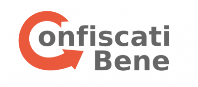

In questa pagina puoi consultare quali sono i progetti che abbiamo sviluppato e quelli che abbiamo sostenuto
- Confiscati Bene è un progetto partecipativo per favorire la trasparenza, il riuso e la valorizzazione dei beni confiscati alle mafie, attraverso la raccolta, l’analisi dei dati e il monitoraggio dei beni stessi. Alla sua costruzione e implementazione partecipano giornalisti, attivisti e tecnologi: ognuno di noi mette a disposizione la propria specifica competenza per rispondere ad alcune domande sullo stato e sulla gestione dei beni confiscati in Italia alla criminalità organizzata: Quanti sono? Dove sono? Quanto valgono? Come vengono riutilizzati?">
-
![<a href='http://ricostruzionetrasparente.it' target='_blank'>RicostruzioneTrasparente.it</a> è un progetto per il monitoraggio della ricostruzione del Centro Italia dopo i terremoti che hanno colpito il territorio dopo il 24 agosto 2016. Il progetto è nato nei primi mesi del 2017, dopo una campagna di crowdfuning che ha totalizzato oltre 15 mila euro in donazioni. Al progetto hanno aderito le principali organizzazioni italiane impegnate in tema di trasparenza e advocacy pubblica, come OpenPolis, ActionAid, Cittadinanza Attiva, Riparte Il Futuro, InformaEtica.](img/rtlogo.png)
- AlboPOP è un piccolo e semplice esperimento, che ha come obiettivo quello di rendere più “popolari” gli albi dei comuni. L'Albo Pretorio indica in Italia un apposito spazio presso il quale le pubbliche amministrazioni italiane affiggono per legge notizie ed avvisi di interesse pubblico per la collettività. Sono una fonte preziosa di informazioni, che le PA devono pubblicare in una sezione specifica dei loro siti internet. All'interno ad esempio: avvisi pubblici,bandi di concorso, determine dirigenziali, avvisi ed esiti di gare, notifiche, ecc..">
- Datiallefiamme.it è un approfondimento per il monitoraggio dei dati relativi agli incendi boschivi. I dati presi in esame si riferiscono al periogo compreso tra il 2009 e il 2016, con un approfondimento specifico sulla Sicilia, sia in termini di numerosità degli incendi che in relazione alla estensione dei territori colpiti.">
- TerremotoCentroItalia.info è un progetto nato da vari gruppi di attivisti digitali e organizzazioni non governative, tra i quali c'è l'associazione Ondata. Dal primo giorno del primo sisma - 24 agosto 2016 - il progetto si pone l'obiettivo di favorire lo scambio delle informazioni d'emergenza tra i residenti delle aree colpite al sisma e i cittadini che vogliono prestare aiuti e soccorsi, cercando di favorire l'avvicinamento tra bisogni e soluzioni.">
-

- sito dell'evento), con il patrocinio del Comune di Milano e il supporto tecnico e organizzativo di Ondata. I mentor dell'associazione hanno coordinato la partecipazione di 66 giovani, organizzati in undici team, che hanno sviluppato per 25 ore consecutive mock up e applicazioni mobili partendo dai dati messi a disposizione da enti pubblici.">
- sito dell'evento). Panel di discussione al mattino dedicati agli Open Data in relazione a innovazione economica, sociale e culturale. Al pomeriggio invece laboratori pratici sui dati aperti.">
- (sito dell'evento) è una iniziativa organizzata dalla community OpenDataSicilia, che Ondata ha supportato sul piano organizzativo.">
- Contromanovra della della campagna Sbilanciamoci. La piattaforma è stata donata agli organizzatori della campagna e all'associazione Lunaria negli anni 2015 e 2016. La campagna Sbilanciamoci costruisce ogni anno una controfinanziaria con proposte alternative di investimento per il governo nazionale.">
{kind=link}
{kind=link}
{kind=link}
{kind=link}
{kind=link}
{kind=link}
{kind=link}
{kind=link}
{kind=link}